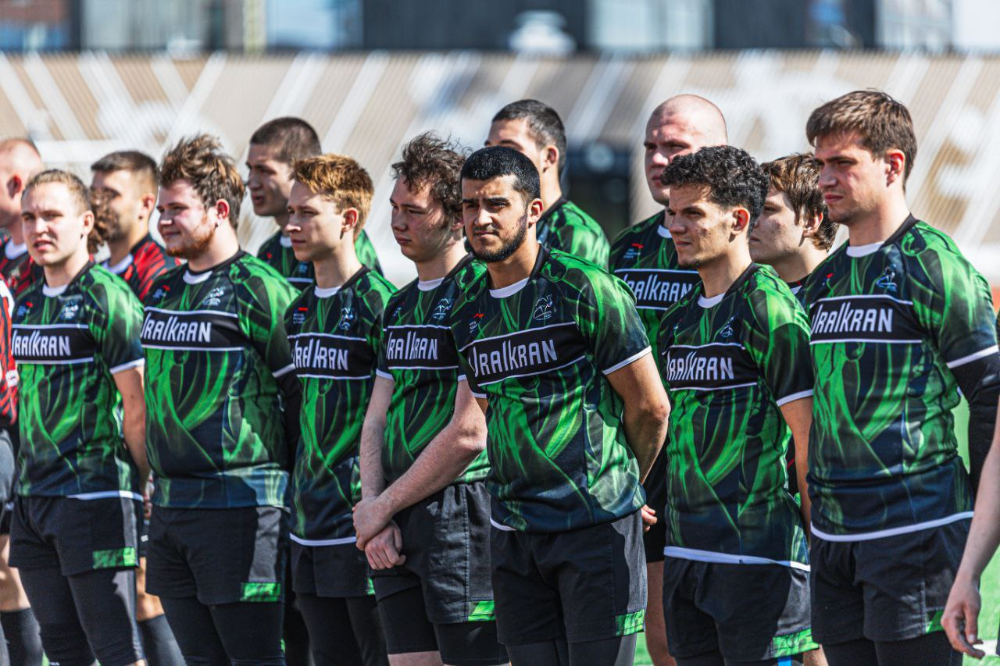
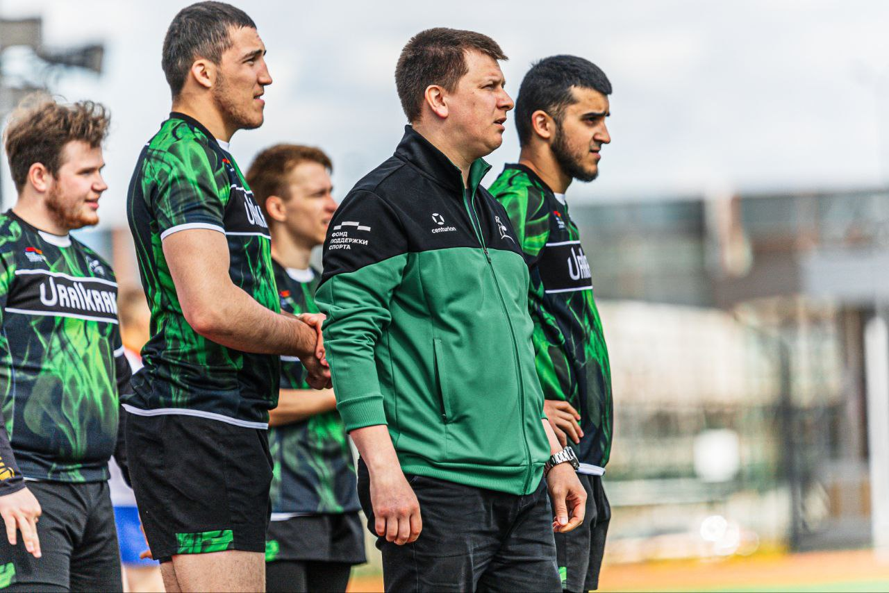
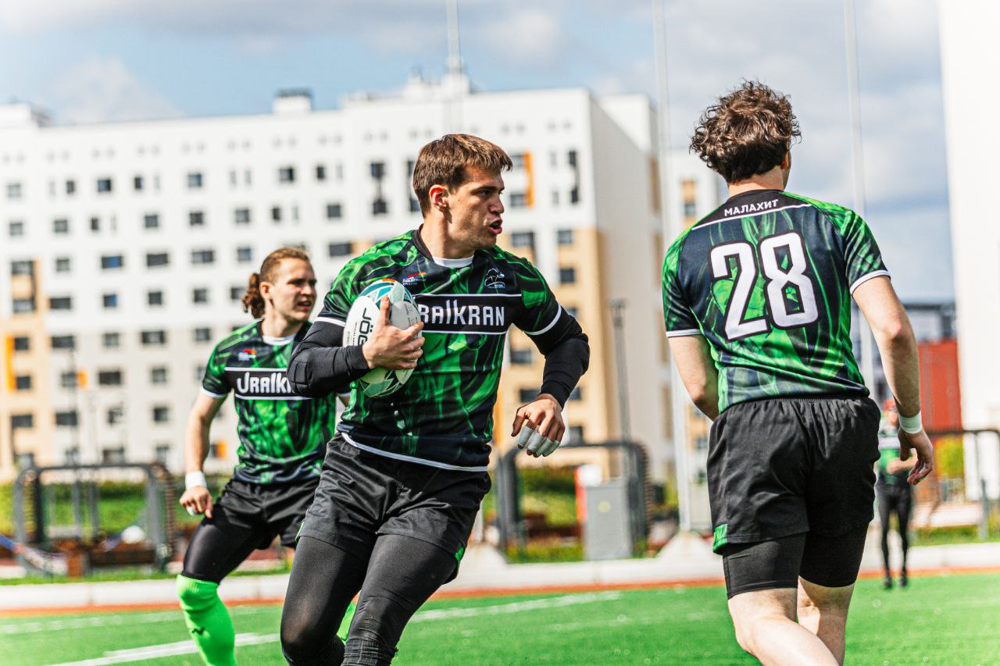
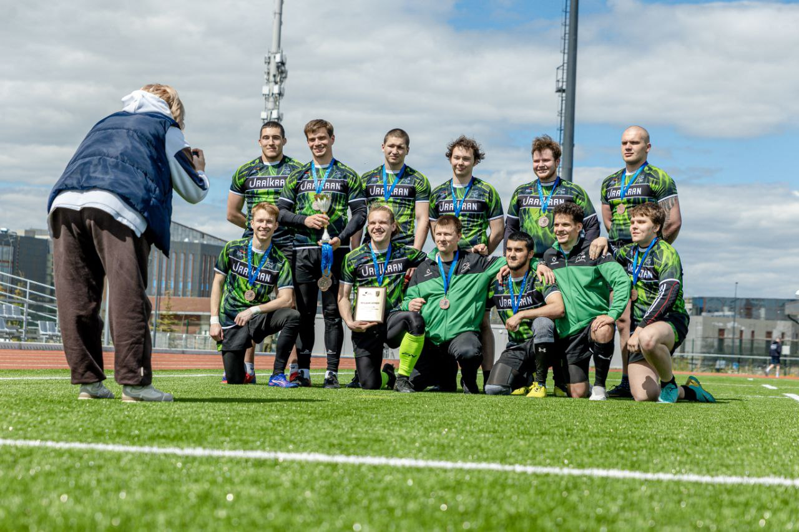
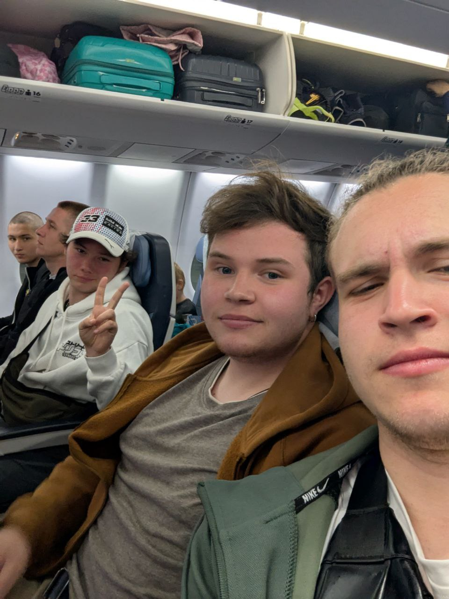
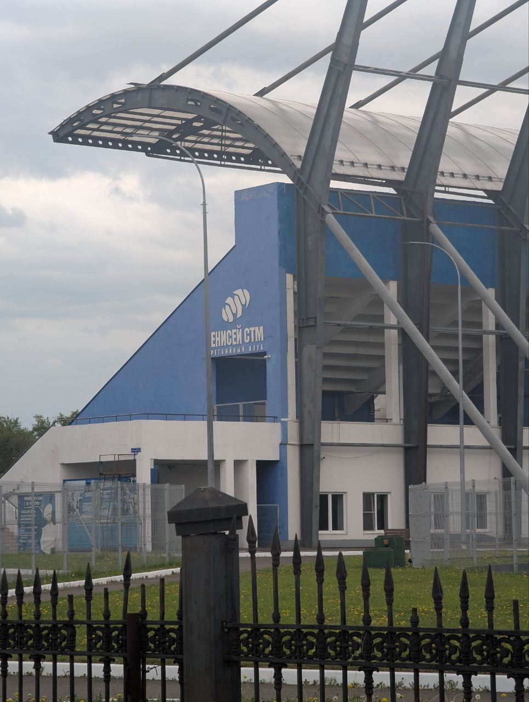
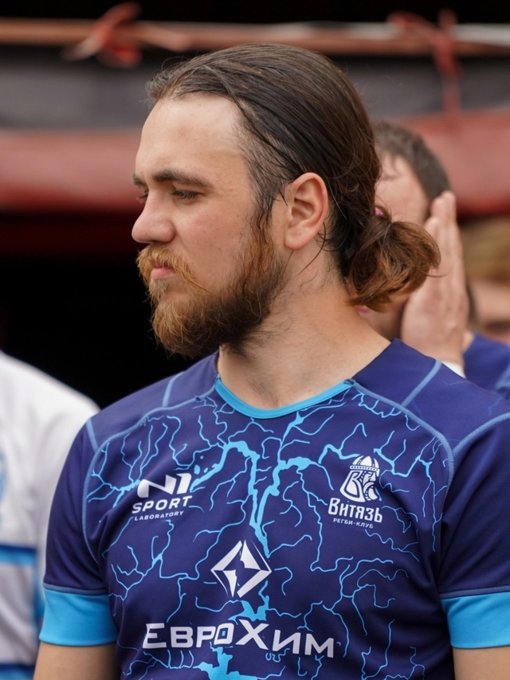

Выезд на первенство студенческих команд
Ехали на игру самым молодым составом с целью получить опыт,
показать что мы можем бороться и получить удовольствие
По итогу заняли почётное 3 место, новенькие втянулись и получили опыт,
а старенькие, в том числе и я(уже 3 год занимаюсь), вспомнили во что играем
перед надвигающимся сезоном регби-15




Выезд на молодёжку в Красноярск
Прошла увлекательная поездка.
Была поставлена цель: получить опыт, а мне в роли капитана.
И она была выполнена, а я в который раз убеждался,
что уровень высшей и федеральной лиги разный.


Прошёл матч между РК "Малахит" и РК "Рать"
‼Вчера прошла игра, а эмоции до сих пор не утихли ‼
🦎 Со счетом 55-41 Челябинский Малахит
одержал историческую победу над командой Рать из славного города Екатеринбурга.
Огромную поддержку чувствовали от зрителей,
а их было не мало! Спасибо за поддержку, было круто!
Сезон открыт победой, но расслабляться рано!

Статья о будущем матче между Малахитом и казанской Энергией
Игра с казанской «Энергией» всегда непредсказуема, полна ярких моментов.
Игроки из Казани опытные, выходцы из детской школы регби.
Это наши давние соперники, принимающие нас всегда «радушно»

Статья о будущем матче между Малахитом и Витязем
Слова Капитана Витязя о нас:
С нетерпением ждём наших болельщиков на домашних играх,
вас будет ждать сюрприз)
